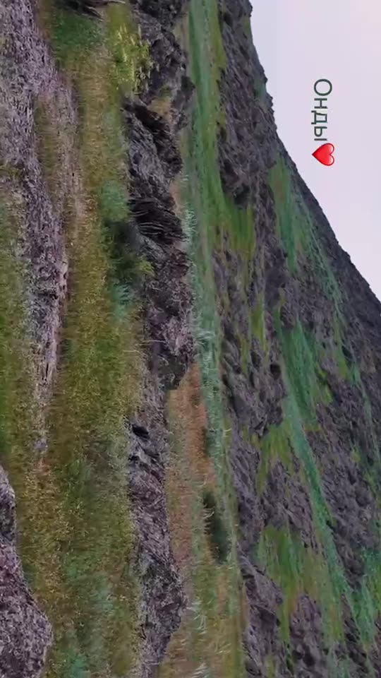
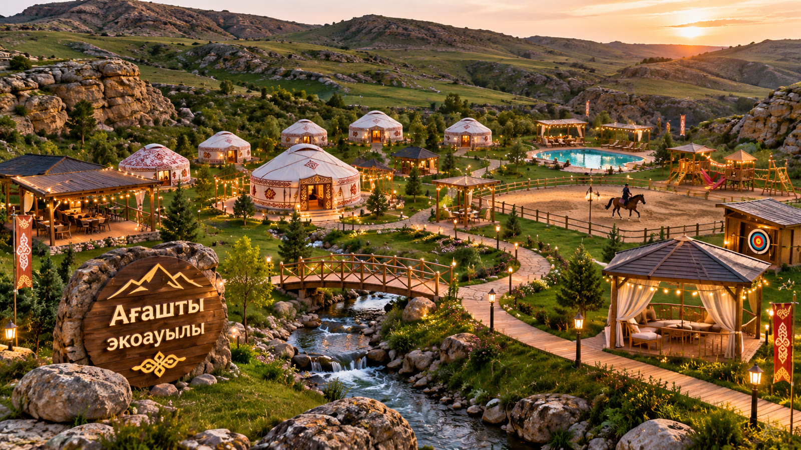
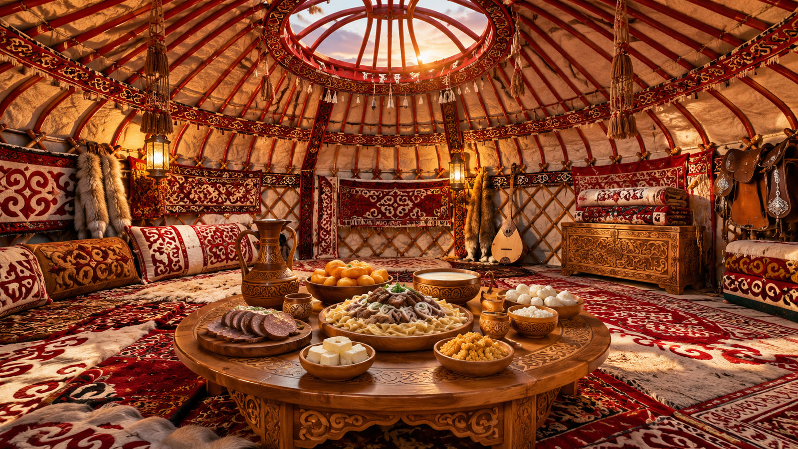

Оңды ауылының интерактивті картасы
Концептуалды визуализация
Сурет — концептуалды көрініс, нақты карта емес. Нысанды басыңыз: көрініс жақындайды.

Маңғыстаудың әлі толық ашылмаған туристік әлеуеті...
Маңғыстау облысы · Маңғыстау ауданы · Оңды ауылы · 2026
Оңды ауылының табиғи әлеуетін тиімді пайдалану
«Ағашты – табиғат пен дәстүр тоғысқан жер!»
Орындаушы: Үмбет Сабыржан, 10-сынып · Жетекші: Ералиева Гүлдана Бүркітәлиевна
Оңды ауылы — Маңғыстау ауданындағы елді мекен. Ағашты жері ауылдың маңында орналасқан: тау бөктерлері, жартасты беткейлер, жасыл алқаптар, табиғи бұлақ және кең дала осында тоғысады.
Жоба ауылдың туристік әлеуетін, жергілікті тұрғындардың кәсіпкерлік мүмкіндігін және ұлттық мәдениетті дамытуды көздейді.
Тарихи деректер, халық саны және статистика берілмеді — олар жобаның құжатында расталмаған.
Концептуалды визуализация
Сурет — концептуалды көрініс, нақты карта емес. Нысанды басыңыз: көрініс жақындайды.


ҚАЗІРГІ · нақты видеодан кадрБОЛАШАҚ · концептуалды суретЖүгірткі — қазіргі табиғат пен жобалық ұсынысты салыстыру. Нысандардың біртіндеп пайда болуы үшін нақты 3D модельдер қажет (README-ді қараңыз).
Концептуалды визуализация
Жобалық ұсыныс. Суреттегі шыршалар жобаға кірмейді: Ағаштыға тән шөптер мен аласа бұталар қолданылады.
Концептуалды визуализация
Заттарды басыңыз. Сурет — жалпақ көрініс, нақты 360° модель емес.

Нысанаға бағыттап басыңыз
Ұяны басып, құмалақты тарату ережесін көріңіз.
Суреттерге негізделген концептуалды көлемді карта · нақты географиялық реконструкция емес
3D карта жүктелуде...
3D картаға арналған визуалдық референсОңды → дала жолы → Ағашты экоауылы
Тінтуірмен айналдырыңыз, дөңгелекпен жақындатыңыз, нысандарды басып зерттеңіз.
Киіз үйдің ішін зерттеу →Үлгілік сауалнама көрсеткіштері
Бұл — жобаның үлгілік деректері, нақты жүргізілген зерттеу нәтижесі ретінде берілмейді.
«Турист көп келсін, табиғатқа зиян келмесін!»
Нақты табыс көлемі мен жұмыс орындарының саны көрсетілмейді: ол — болашақ мүмкіндіктер.
Кезеңді басқанда «Болашақ Ағашты» көрінісіне жаңа нысан қосылады.
Демонстрациялық үлгі, брондау жүйесі емес.